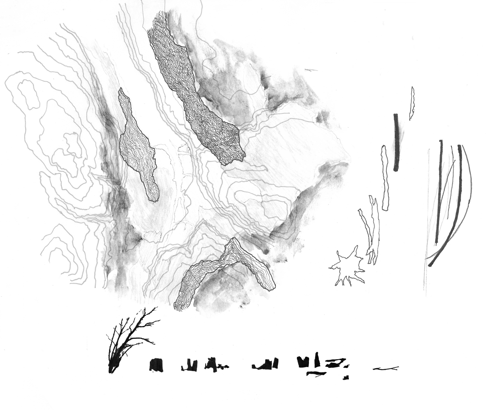
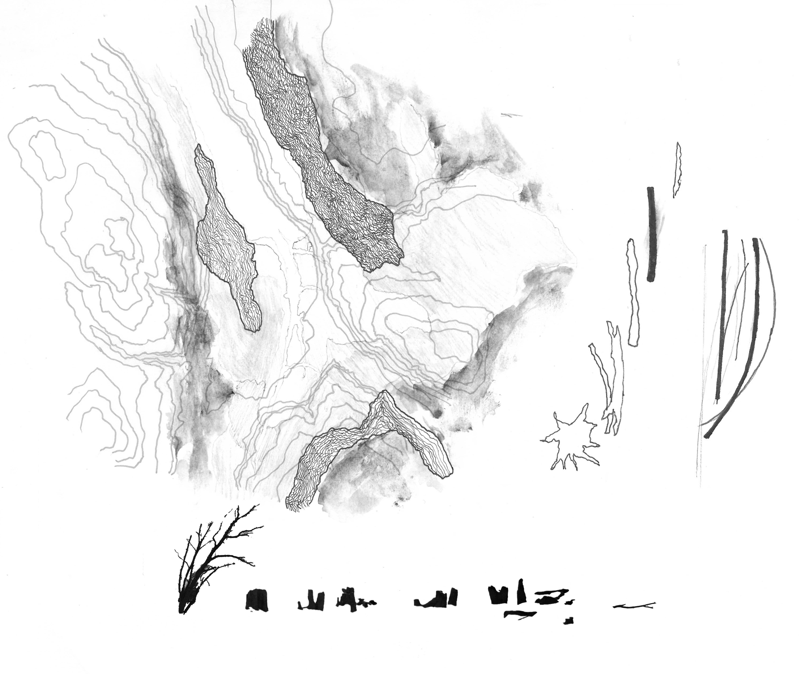

THE DRIFT WOOD
The site of the Cayuga Lake inlet is populated with drift wood which
marks the geological history if the water front and mediate between
the land and the water. The rowing boat viewing complex consists of
the viewing platform, dock and a watch tower that assume the form
of the river formation and the materiality of a piece of drift wood.

 
